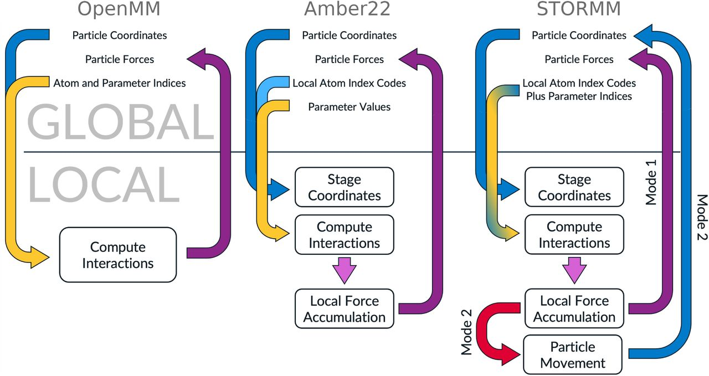
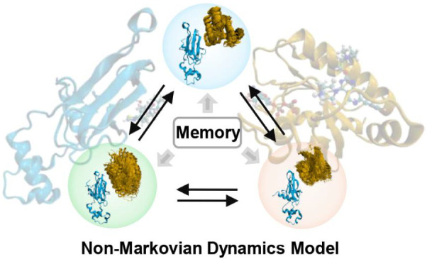
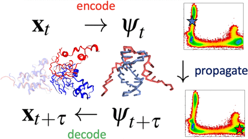
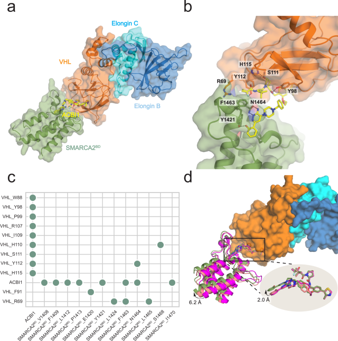
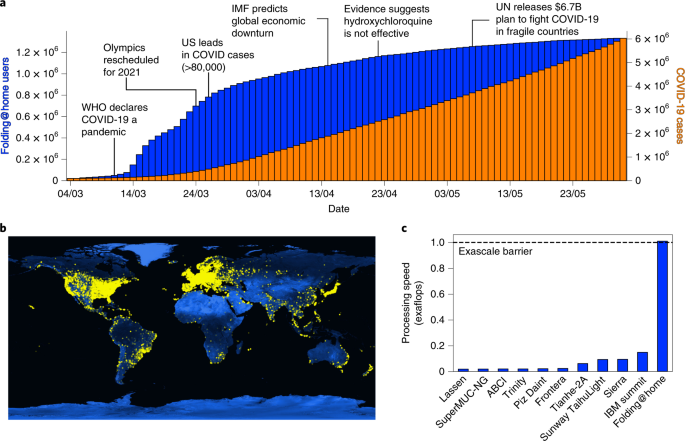
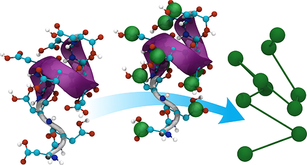
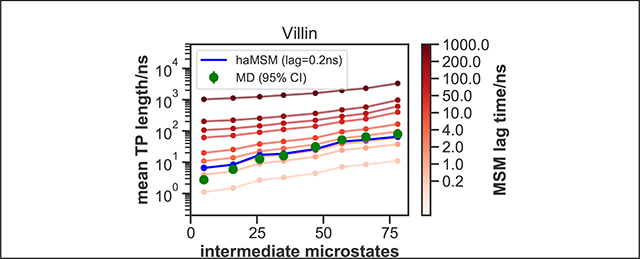
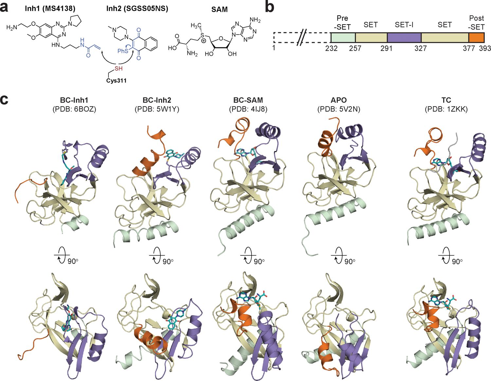
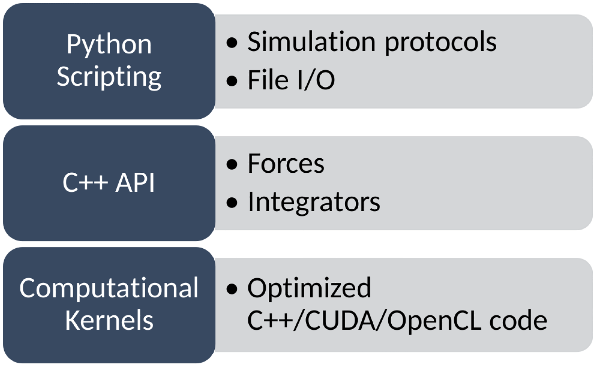
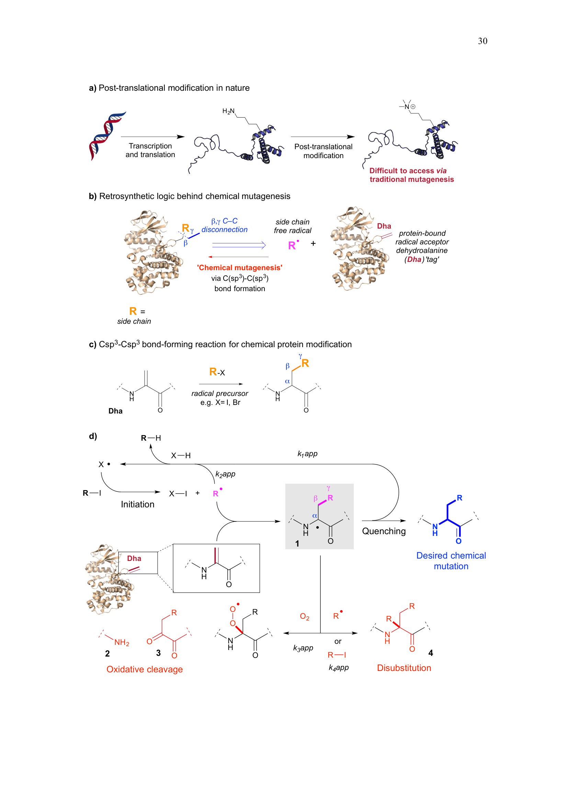

Molecular designer with roots in experimental chemistry and chemical biology, deep experience in large-scale molecular simulation, and fluency across the physics-based and ML models used in drug design. I lead in silico design for a small-molecule allosteric program across the full discovery arc, from target assessment to lead optimization, benchmarking every prediction against experiment. Much of my work establishes where these methods genuinely advance design and where they mislead: fine-tuning ADME models on internal data, extracting chemical interpretability, and evaluating structure-prediction tools (OpenFold, Boltz) while automating both the design of candidates and the structural inputs they are scored against. Increasingly I automate the entire design loop with agentic AI—building a reusable evaluation platform spanning SAR analysis, model-accuracy tracking, and generative chemistry that lets one scientist orchestrate an agent team with the reach of a traditional CADD group.
Most of my work this year runs through Claude Code. Having delegated the routine computational-chemistry tasks — docking, simulation setup, compound scoring — I have moved to building agentic workflows that automate larger sections of the discovery cycle. These include applications for automated SAR and structural-biology analysis, model-accuracy dashboards that compare every prediction against fresh experimental assay data, and an "Ask an Agent" interface for asynchronous chemistry questions. Each morning the system pulls new data, checks its own logs, flags problems, and records the reasoning behind every compound selection, so that past decisions can be revisited and learned from.
The harder problem is the agentic orchestration of generative chemistry. I am building a layer that turns generative models such as REINVENT into complete design campaigns, with molecular-property models and SAR encoded directly in the reinforcement-learning reward and Claude proposing the compounds. For tightly constrained modifications this already runs semi-autonomously; the less-constrained cases still require an operator fluent in both medicinal and computational chemistry to steer it. Much of the work has been mapping where the model's chemical reasoning breaks down: it shows little intrinsic curiosity around activity cliffs, and its reliability varies considerably from one analysis to the next. Understanding these limitations, and closing them, is the focus of the work.
Predictive models in drug design are typically benchmarked against static datasets — collections of compound–activity measurements, such as ChEMBL records or held-out test sets, scored all at once. A drug program, however, is not a collection of measurements; it is an ordered sequence of decisions, in which each compound is made in response to what the previous ones revealed. That temporal structure — the record of how a campaign actually progressed — is almost never preserved in public data.
I want to build a dataset that preserves it: extracting complete campaigns from the literature and patent record and reconstructing them as design timelines — which analog followed which, what was measured, and what was abandoned. Such a corpus would provide the benchmark that forward-in-time evaluation requires, of the kind the SAR Brain demo illustrates: any model — RBFE, co-folding affinity, or a generative loop — could be replayed against a real program's decisions to ask whether it would have helped. The same data would also serve as training signal for future affinity models, which currently have little structured SAR to learn from.
A few more interactive tools are in the works — each one another lens on the same question of where AI earns a seat at the design table. Previews below; check back soon.
Extracting complete medicinal-chemistry campaigns from papers and patents to build a dataset of real design histories — to analyze with a SAR Brain–style framework across a range of models, and to serve as benchmarks and synthetic-data seeds for co-folding and co-folding-based affinity models.
An interactive walk through where property models hold up across a design series — and where the in-silico/experiment gap quietly opens.
A live view of an agent-driven generative campaign: proposals, scoring, and the feedback that steers it toward make-worthy chemistry.
A reliability dashboard that scores predictions not just on accuracy but on whether they can be trusted for the next decision.









